Build the whole launcher in a SolidWorks assembly using the VEX Clawbot part files: metal, shafts, bearings, collars, spacers, screws and nuts. Leave out the rubber bands. In every picture, the parts you add in that step are blue.
!
Before you start: copy the catapult part files folder from Mr. Brown to your own folder. Open the parts from your copy, and keep the assembly in that same folder.
Stuck? Tell Mr. Brown the step number and the mate you are trying, like "Step 3, I can't get the spacer to line up with the screw."
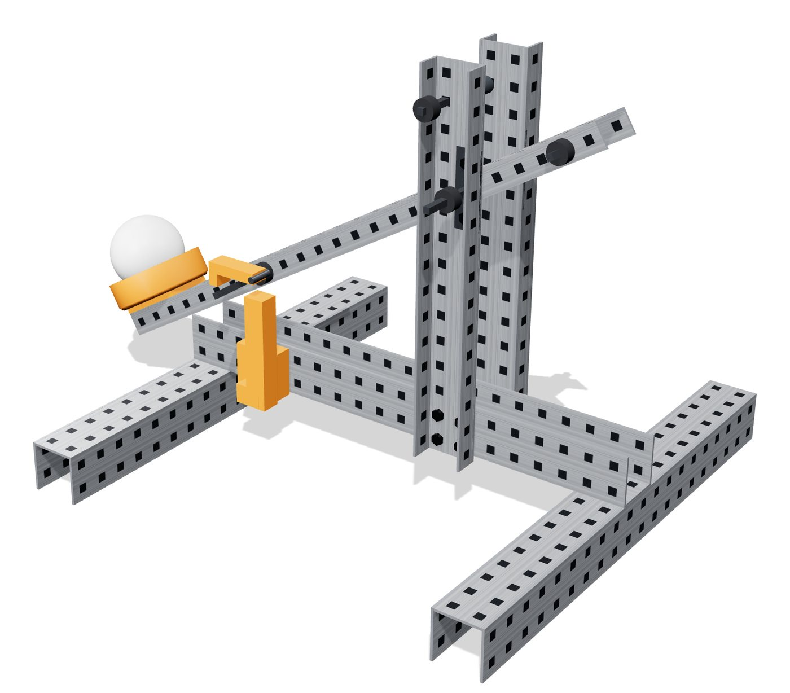
Parts list (one launcher)
Qty
Part file
Where it goes
3
U-channel 2x2x2x20
Spine, front cross member, back cross member
2
C-channel 1x2x1x15
Uprights
1
C-channel 1x2x1x25
Arm
2
4" shaft
Pivot, catch pin
1
3" shaft
Stop bar
1
2" shaft
Band peg
2
Flat bearing
Outside of each upright at the pivot
8
Rubber shaft collar
2 each on the pivot, stop bar, band peg and catch pin
8
1/8" nylon spacer
Between each upright and the spine, one on each upright screw
8
#8-32 x 1/2" screw
Uprights to spine, 4 per upright
8
#8-32 x 3/8" screw
Spine to cross members (4), flat bearings (4)
16
#8-32 hex nut
One on every screw
Hole maps
Count holes starting at 1 from the end shown. Getting a hole wrong by one will make your launcher not match the real one, so count twice.
Spine (seen from the top)
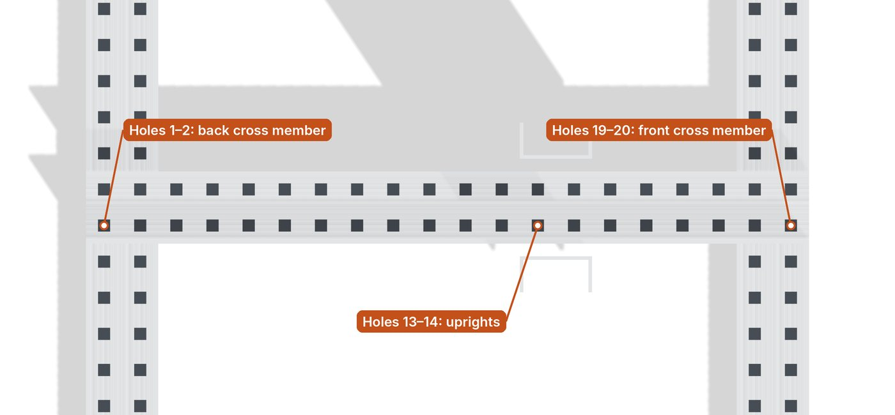
Upright (seen from the side)
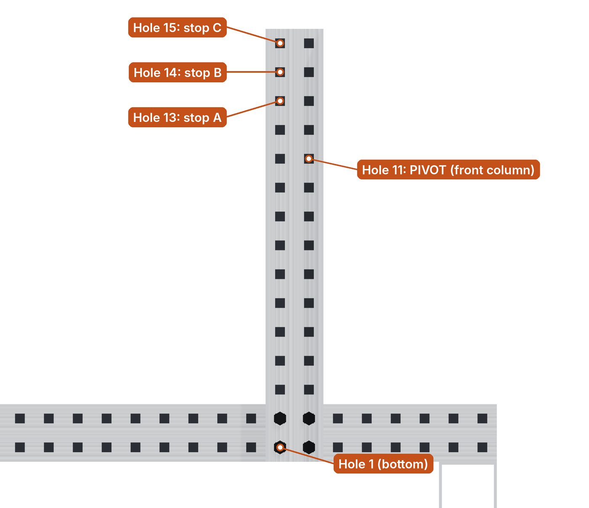
Each upright has two columns of holes. The front column is the one closer to the front cross member. The pivot goes in the front column. The stop bar goes in the back column.
Arm
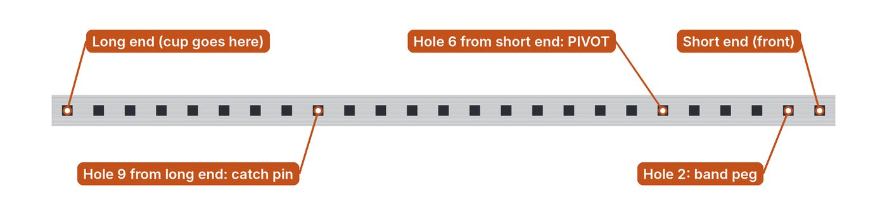
Mating skills you will use
Every step uses these four skills. The steps tell you which one by letter.
ALine up two metal parts
Coincident: the two faces that touch.
Coincident: one inside wall of a square hole in part 1 with the matching wall of the hole in part 2.
Coincident: a wall at 90° to the first one, in the same pair of holes.
Tip: hole walls are thin. Zoom in, or right-click and use Select Other to pick the wall instead of the flat face.
BCenter something in a square hole
For round screws, square shafts, and anything else that does not match the hole's shape.
Advanced > Width. Width selections 1: two opposite walls of the hole. Width selections 2: the screw's round shank, or two opposite faces of the shaft. Constraint: Centered.
A second Width mate using the other two walls of the hole.
Coincident: screw head underside on the metal face (screws only).
Tip: right-click the metal part and use Change Transparency to see and click the screw shank inside the hole.
CPut a nut or spacer on a screw
Concentric: the round hole of the nut or spacer with the screw's shank.
Coincident: the nut or spacer face against the part it touches.
DPut a collar on a shaft
Center the collar on the shaft with two Width mates, like skill B.
Coincident: the collar's flat face against the bearing or metal it sits next to.
Save time: once one screw has its mates and nut, select both and use Insert > Component > Copy with Mates to place the next one. You only pick the new hole walls.
1Spine
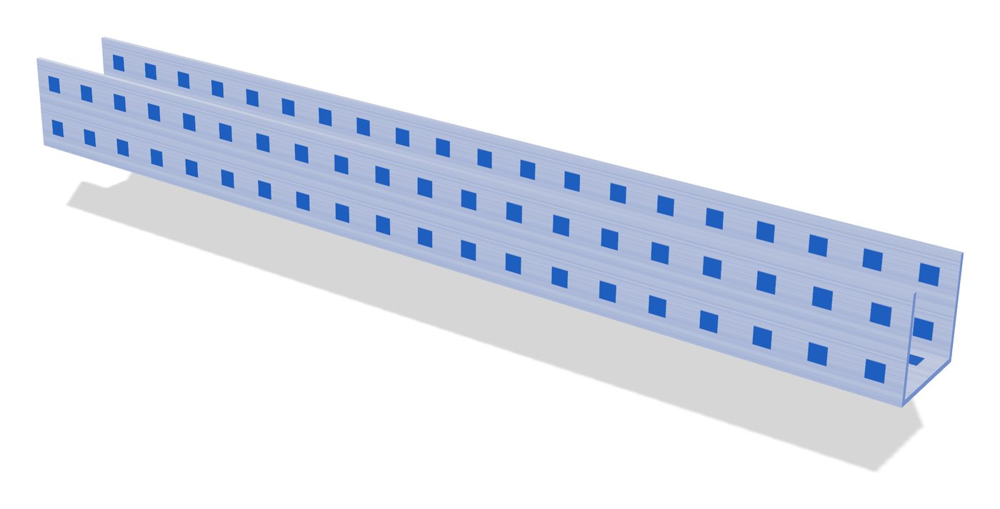
Parts
1U-channel 2x2x2x20
Do
Start a new assembly. Set units to IPS (inch).
Insert the U-channel first, with the open side up. The first part is fixed, so it shows (f) in the tree.
Save now as Catapult_Assembly_LastName_FirstName, and save often.
2Front and back cross members
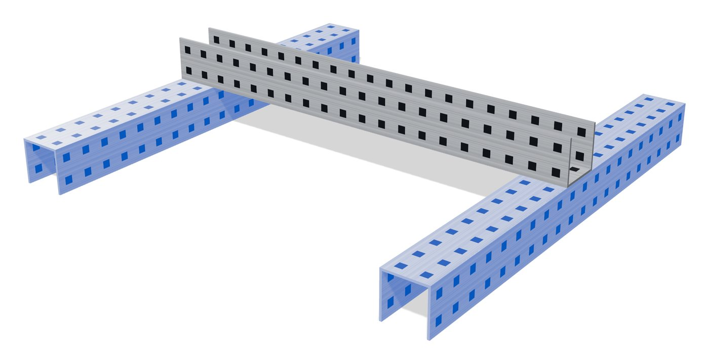
Parts
2U-channel 2x2x2x20
4#8-32 x 3/8" screw + 4 nuts
Do
Put each cross member under the spine, open side down, crossing at 90°. A
Back cross member under spine holes 1–2. Front cross member under spine holes 19–20. The spine crosses each one at its middle (holes 10–11).
2 screws per joint, in opposite corners of the 2 × 2 overlap. Heads inside the spine, nuts inside the cross member. BC
3Uprights
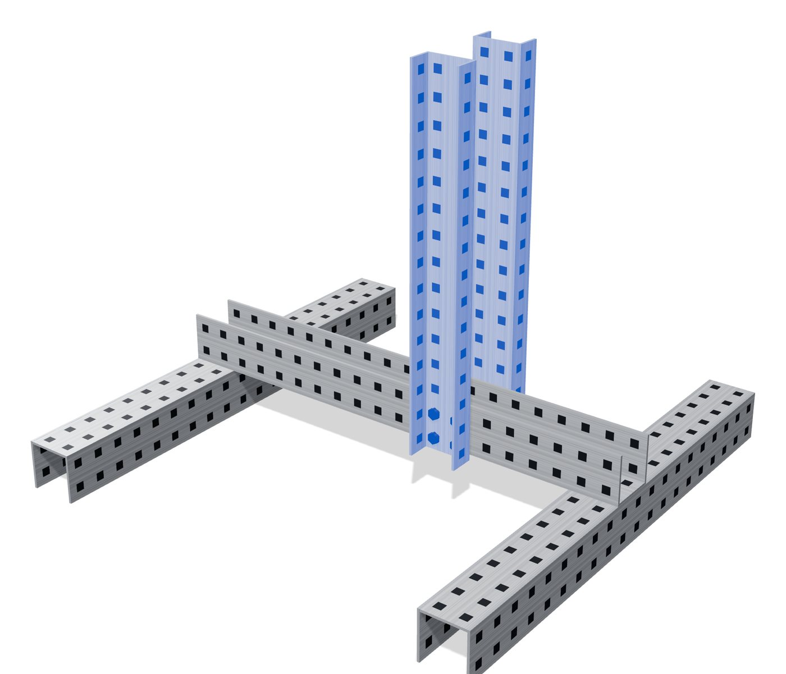
Parts
2C-channel 1x2x1x15
81/8" nylon spacer
8#8-32 x 1/2" screw + 8 nuts
Do
Put one upright on the outside of each spine wall, flanges pointing out, over spine holes 13–14. Its bottom end lines up with the bottom of the spine, so its holes 1–2 match the spine wall's two rows.
Leave a 1/8" gap for the spacers: use a Distance mate of 0.125 in between the upright and the spine wall, plus two hole-wall coincident mates. A
4 screws per upright, heads on the outside. B
A spacer on every screw between the upright and spine, then a nut inside the spine. C
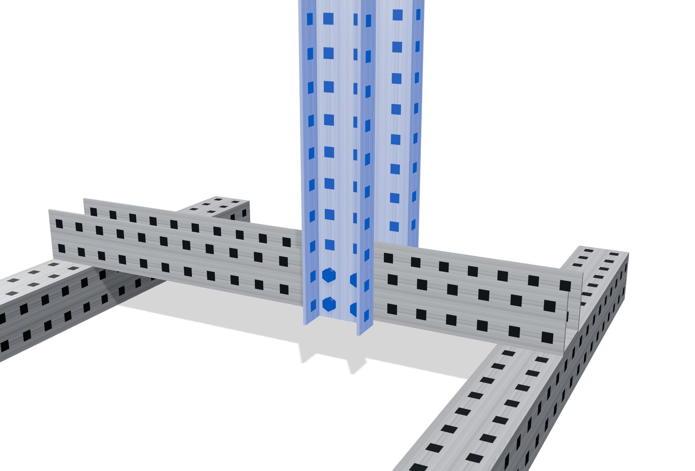
4Flat bearings
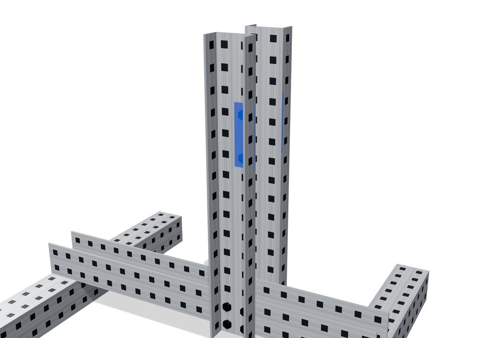
Parts
2Flat bearing
4#8-32 x 3/8" screw + 4 nuts
Do
One bearing on the outside of each upright, standing up and down along the front column.
Center the bearing's middle hole on upright hole 11. Use skill B with the bearing's round hole as Width selections 2. B
Screws through the bearing's end holes into upright holes 10 and 12, nuts inside. BC
5Pivot shaft and arm
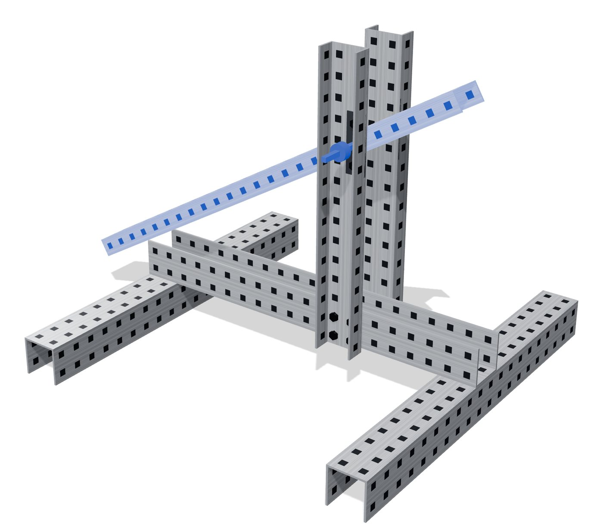
Parts
14" shaft (pivot)
1C-channel 1x2x1x25 (arm)
2Rubber shaft collar
Do
Slide the 4" shaft through both bearings and upright hole 11, sticking out the same amount on each side. B
Put the arm between the uprights, open side down, short end toward the front. Arm hole 6 from the short end goes on the shaft. B
Center the arm between the uprights: Width mate with the two inside upright faces and the two outside arm faces.
A collar on each end of the shaft, against the bearings. D
Pose it: Angle mate of 30° between the top of the arm and the top of the spine, so the long end rests down at the back.
6Stop bar
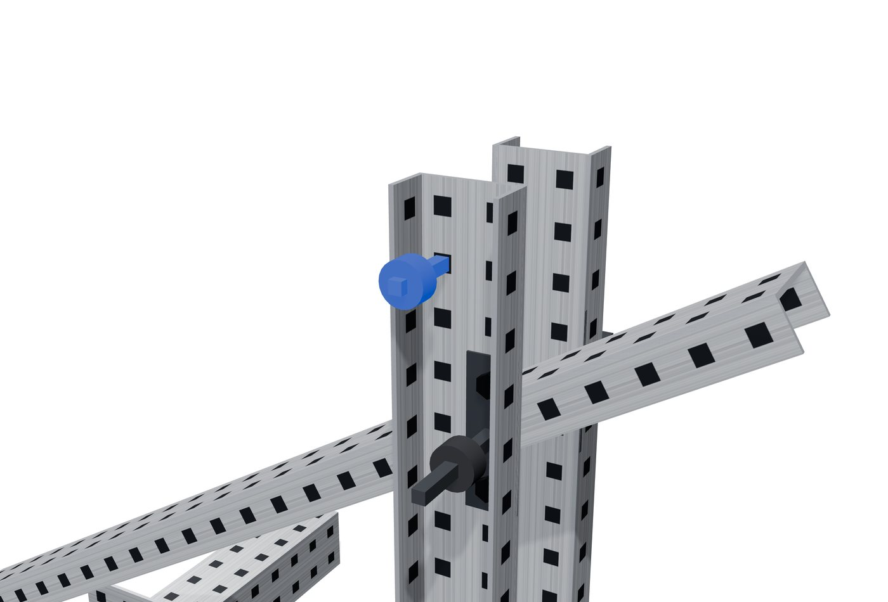
Parts
13" shaft
2Rubber shaft collar
Do
Slide the 3" shaft through the back column, hole 14 (stop B) of both uprights. B
A collar on each end, against the outside of the uprights. D
Stop holes: A = hole 13, B = hole 14, C = hole 15. The arm hits this bar, and that sets the launch angle.
7Band peg and catch pin
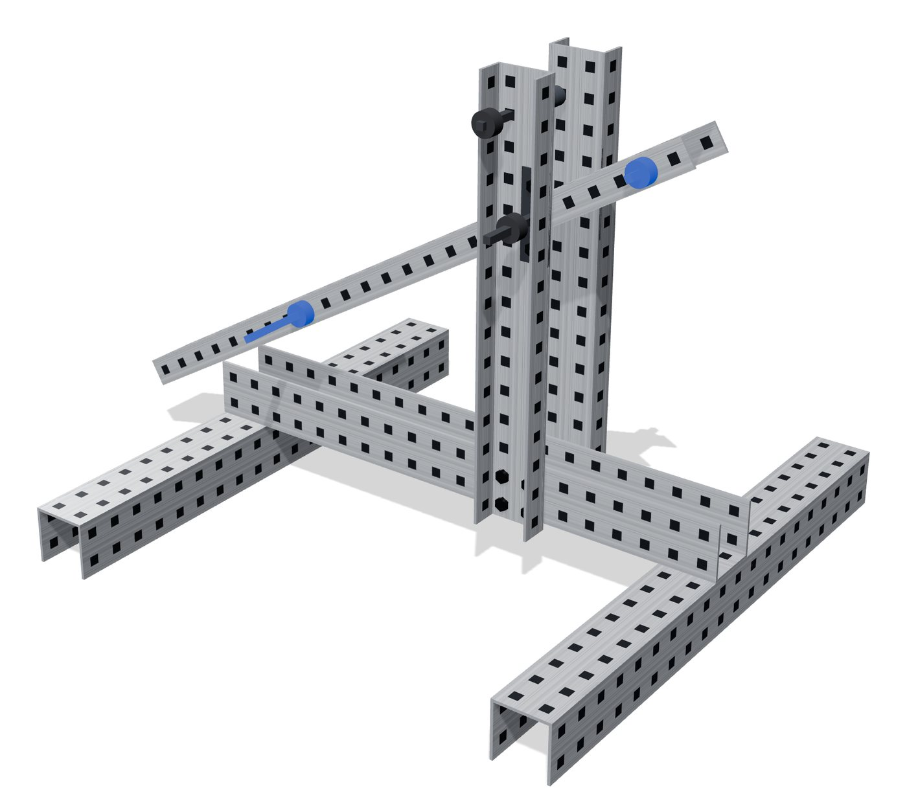
Parts
12" shaft (band peg)
14" shaft (catch pin)
4Rubber shaft collar
Do
Band peg: 2" shaft through arm hole 2 from the short end, centered. B
Catch pin: 4" shaft through arm hole 9 from the long end, centered. B
A collar on each shaft on both sides of the arm, against the arm. D
Real build: the rubber bands loop from the band peg down around the front cross member. You don't model them.
8Test the motion
Right-click the 30° Angle mate and choose Suppress.
Click Move Component, turn on Collision Detection and check Stop at collision.
Drag the long end of the arm up. It should swing on the pivot and stop when it hits the stop bar. If the whole launcher moves or nothing turns, a mate is wrong. Check the Mates folder for errors.
Unsuppress the Angle mate when you're done.
9Add your ball cup and trigger (later)
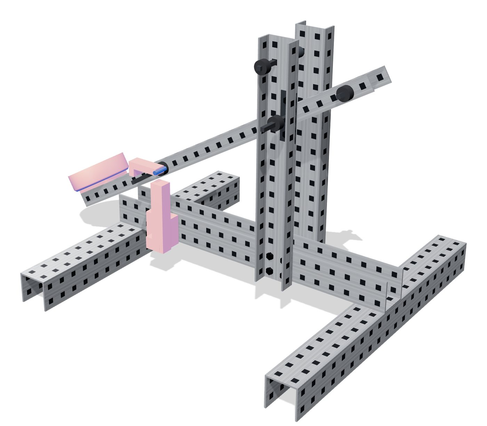
When your own ball cup and trigger parts are designed, insert them here with the same mating skills.
The cup bolts to the long end of the arm and clears the uprights as it swings.
The trigger mounts to the spine and holds the catch pin with the arm at 30°.
Run the motion test again with your parts on.
Turn in
Check the tree: no red or yellow errors in the Mates folder, and only the spine shows (f).
File > Pack and Go, check Save to Zip file, and name it Catapult_Assembly_LastName_FirstName.zip. This keeps all your part files with the assembly.
Turn in the zip file. Files that don't use this exact name will not be graded.